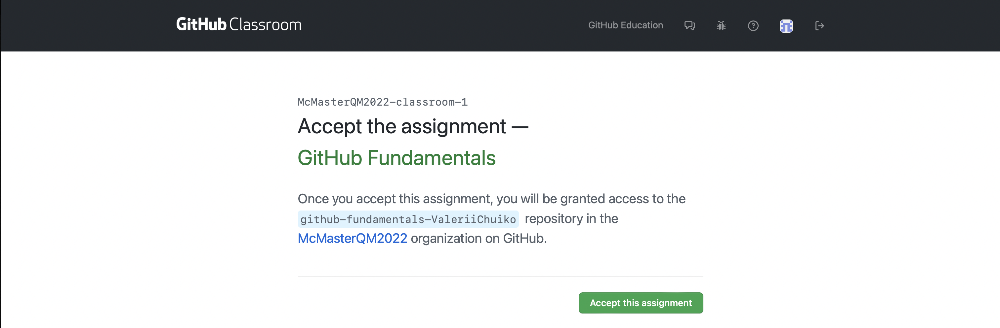
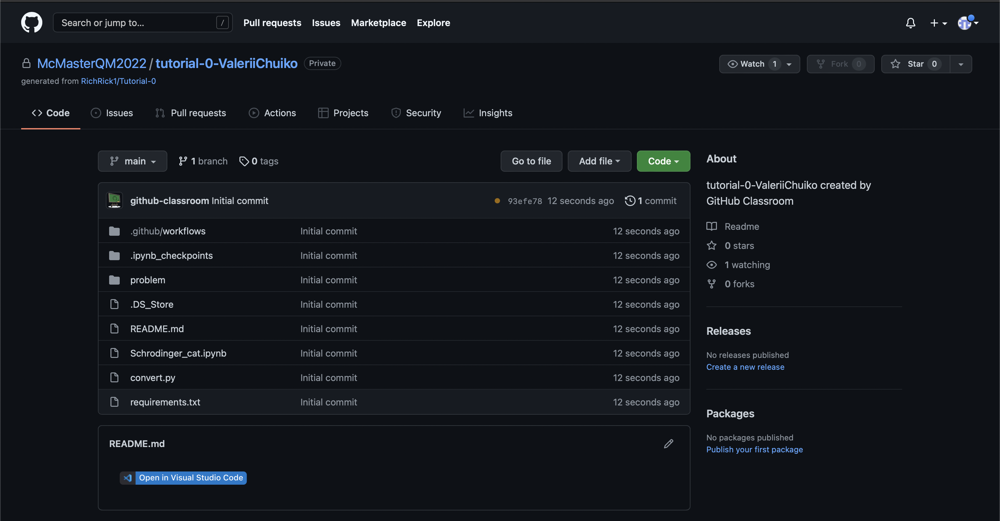
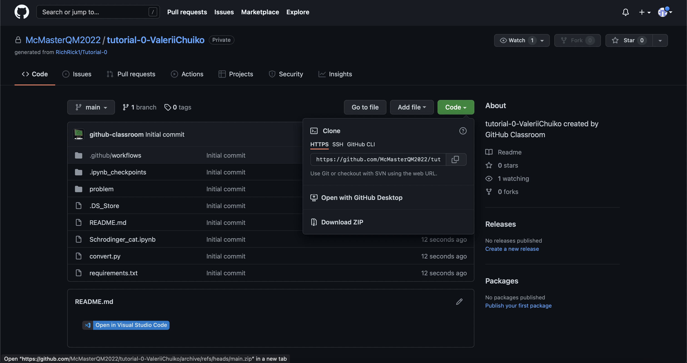
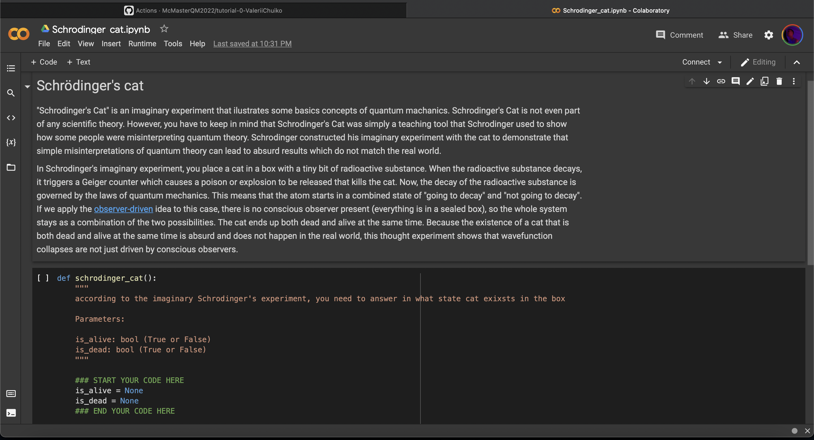
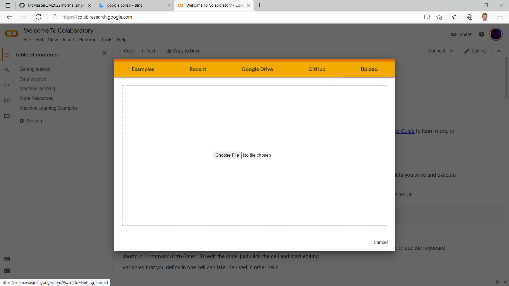
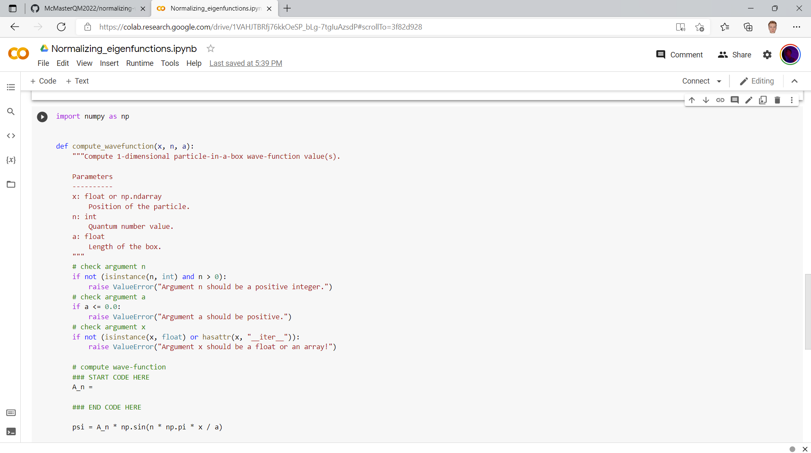
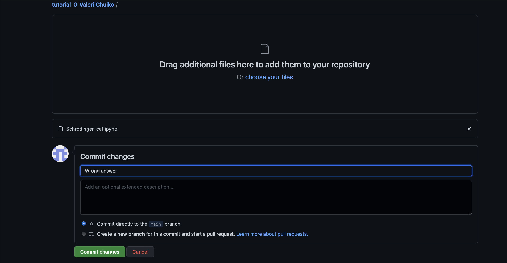
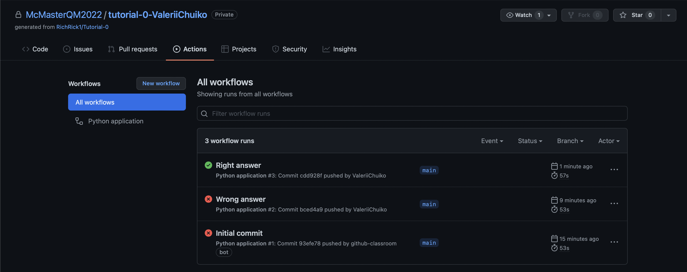
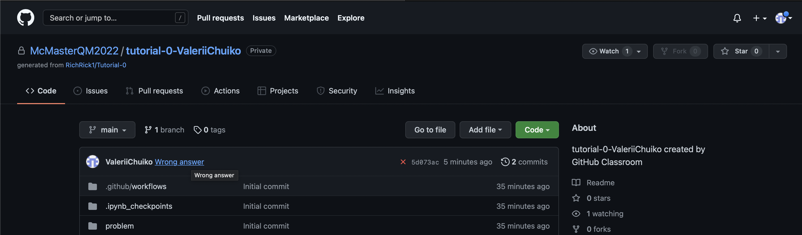

Assignment: Google Colab#
🎯 Objective¶#
Hello Folks! In this tutorial we are going to cover basics steps of editing, submitting and analyzing our results using GitHub, along with some basic python skills. Before attempting this assignment you should be familiar with the course content on GitHub, Jupyter, Python, and Numpy.
📜 Instructions: How to receive the assignment#
This mock assignment is available via the link. Accept the assignment, as described previously 
A new repository was created for this assignment  There is only one file — jupyter notebook (*.ipynb file) — that you need to complete in order to complete this assignment.
In the current repo this file is called Schrodinger.ipynb.
Editing a Jupyter Notebook#
As described in the notes, there are several ways to edit .ipynb files.
In this tutorial assignment we will show the how to work with Jupyter notebooks through google colab. There are two ways to do this.
Direct Download of the Repository#
Download the .zip archive of the repo. In order to download it click
codeandDownload Zip.When the repo is downloaded, go to Google Colab and add the .ipynb file from the repo:
File\(\rightarrow\)Upload notebook . This uploads the Schrodinger.ipynb file
. This uploads the Schrodinger.ipynb file
Voila! 
Using GitHub and Colab together.#
You can use GitHub and Colab together. It can be relatively complicated in some cases but for a public repository, it’s quite simple:
For a directory with the path
https://github.com/organization/repository/blob/branch/directory/subdirectory/filename.ipynb, merely replace the first part of the path, so that one hashttps://colab.research.google.com/github//organization/repository/blob/branch/directory/subdirectory/filename.ipynb. That is, one replacesgithub.comwithcolab.research.google.com/github.
Extension for Chromium Browsers.#
If you use a browser like Google Chrome or Microsoft Edge, then you can use the Open in Colab browser extension. Then,
View the target Jupyter Notebook on Github
Click the extension to open the notebook in Colab.
When you do this, you may need to grant Google/Microsoft (Colab/GitHub) permission to interchange information.
Understanding the assignment#
There is an instruction written in the notebook. All you need to do is to fill the code between
### START YOUR CODE HERE
...
### END YOUR CODE HERE
Let’s say I’m sensitive enough to assume that cat is 100% alive:

Now, we can save and download the edited notebook: click File \(\rightarrow\) Save and then Download \(\rightarrow\) Download .ipynb

Submitting the assignment#
Submitting the assignment is a breeze!
When you downloaded the final version of the file just go to your repo and click Add file \(\rightarrow\) Upload files and upload your recently created file 
To commit your changes, just click Commit changes 
Check the result#
In order to check whether your code passed tests all you need to do is go to Actions. Be patient; the tests should have automatically been triggered when the tests were run.
Uh-oh…. the red cross indicates that there is something wrong. Let’s try again.
Open Google Colab and now let’s say that cat is alive and dead simultaneously:

If you can see green check mark…. CONGRATULATIONS! you passed the assignment
Upload and commit new notebook and check if it passed the test: 
Well done! We nailed it and now it’s finally a time to reward yourself scrolling TikTok.
Nota Bene#
If you can’t pass the test, click at the commit name (Wrong answer in this particular case) and then contact me @RichRick1 using the comment section
 
Grading Scheme#
Completing the assignment earns you an S. To earn an S+, can you find another choice for is_alive and is_dead that also passes the tests? Explain why some choices of is_alive and is_dead pass the tests and others do not by adding a Markdown cell to the end of your Notebook.